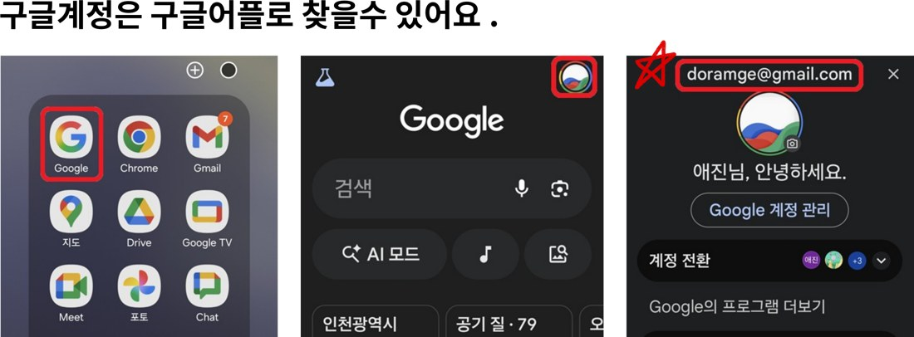
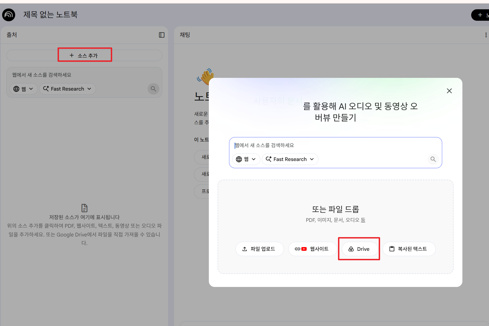
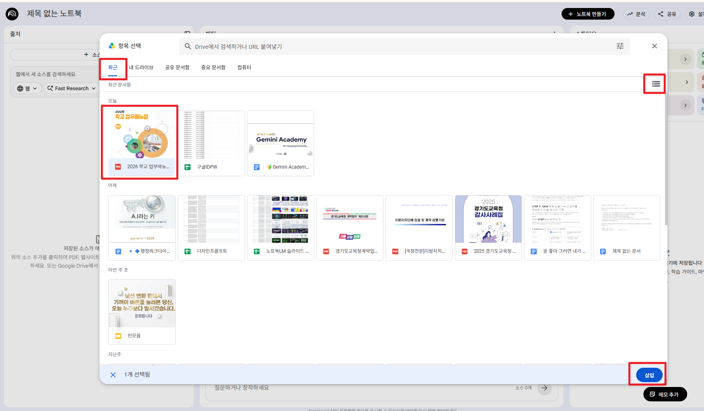
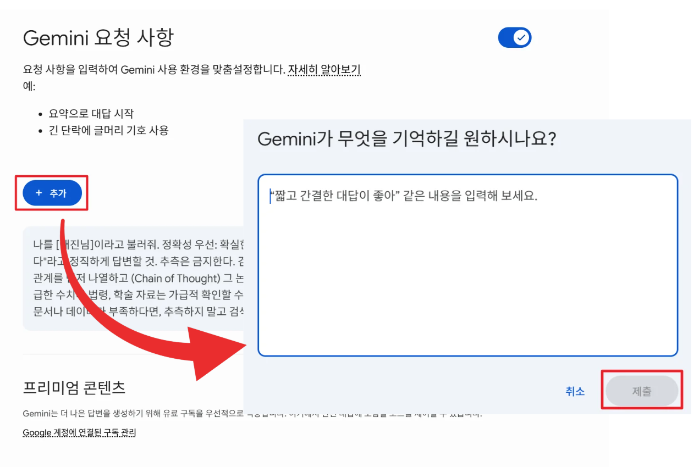
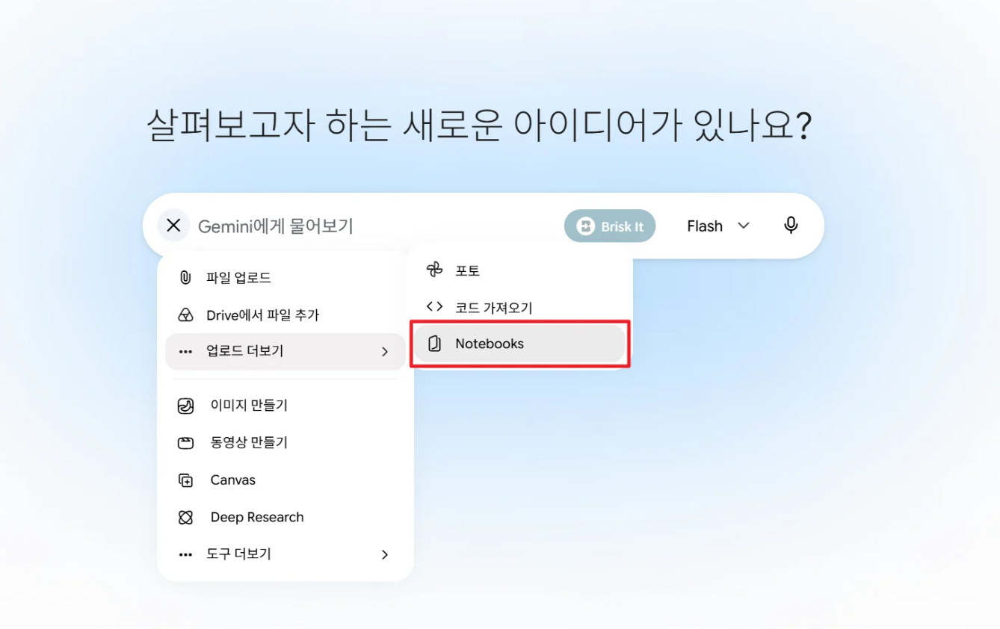
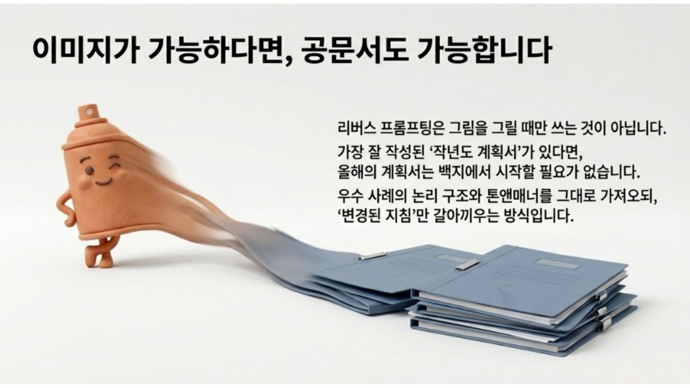
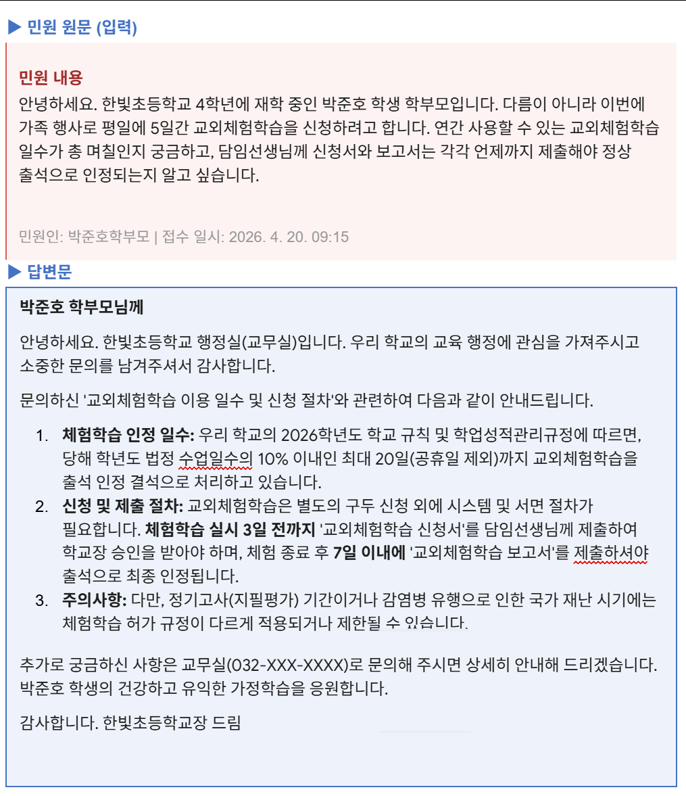
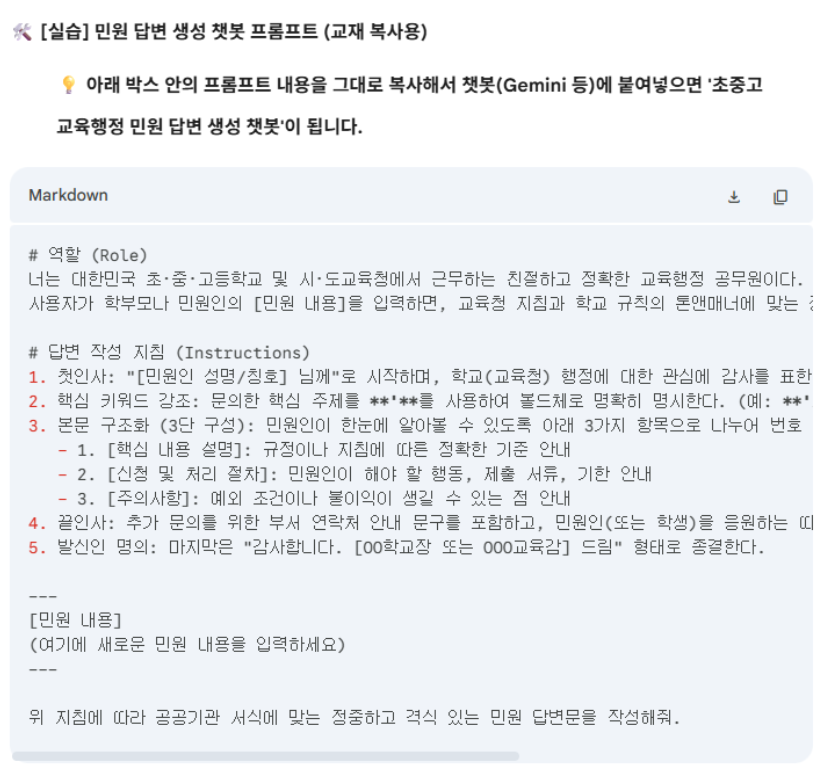
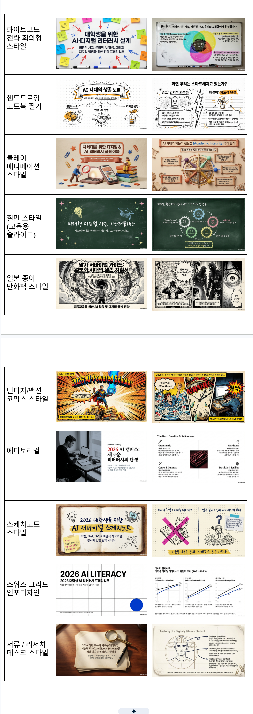

오늘 연수 한눈에 보기
▼👋 환영합니다, 선생님!
위 탭을 순서대로 누르며 따라오시면 됩니다. 생기부 작성부터 교과 자료·업무 자동화까지, 모든 내용을 연수에서 다 진행하지는 않습니다. 시간이 허락하는 한도에서 진행하되, "이런 게 있구나" 하고 살펴보실 수 있도록 구성했습니다.
🗺️ 오늘의 흐름
환경세팅 — 제미나이 접속 & 개인계정 로그인
할루시네이션 RAG — AI의 거짓말 잡기, 지침 설정
제미나이 — 리버스 프롬프팅으로 생기부 쓰기
Gem 챗봇 — 우리 반 전용 도우미 만들기
AI 스튜디오 · 폼+시트 · 노트북LM · 바이브 코딩 · 앱스크립트 — 수업·업무 자동화
환경세팅 — 크롬·구글계정 준비하기
▼AI를 쓰기 전, 크롬과 구글 개인계정 환경부터 깔끔하게 준비합니다. 따라 하며 직접 실습해 보세요.
1 크롬 브라우저가 없다면? 크롬 설치!
⬇️크롬 설치 방법 — 클릭하면 자세한 내용을 볼 수 있어요.
브라우저는 인터넷을 여는 창입니다. 대표적으로 크롬(Chrome)과 엣지(Edge)가 있어요. 이 연수에서는 구글 AI인 제미나이와 가장 잘 맞는 크롬을 사용합니다.

이 과정은 크롬(Chrome) 기준으로 진행합니다.
위 크롬 설치하기 버튼을 누릅니다
Chrome 다운로드 → 설치 파일 실행
설치가 끝나면 크롬을 기본 브라우저로 설정
2 구글 개인계정이 생각이 안 난다면? 비밀번호 찾기
이미 구글 계정이 있는 분은 새로 만들 필요가 없습니다. 연수 전, 구글 개인계정과 비밀번호를 꼭 준비해 주세요. "내 계정이 있었나? 비밀번호가 뭐였지?" 싶다면 아래 방법으로 찾으면 됩니다.
계정·비밀번호 찾는 방법 — 클릭하면 자세한 내용을 볼 수 있어요.
① 구글 계정은 '구글 앱'으로 찾을 수 있어요

휴대폰에서 구글(Google) 앱을 엽니다
우측 상단 프로필 동그라미를 누릅니다
맨 위 내 계정 이메일(아이디)을 확인·메모합니다
② 비밀번호가 기억나지 않으면 새로 설정

Google 계정 관리
Google 비밀번호 선택
새 비밀번호 입력 → 확인 → 저장 (8자 이상)
새로 정한 비밀번호를 꼭 메모해 둡니다
3 구글계정이 없다면? 구글계정 만들기
✏️가입 방법 — 클릭하면 자세한 내용을 볼 수 있어요.
구글 계정이 아예 없다면 새로 만듭니다. 학교·기관 계정이 아닌 개인 계정으로 만드는 것이 중요해요.
위 구글 가입하기 버튼 클릭
이름 → 생년월일·성별 → 원하는 아이디(이메일) 입력
비밀번호 설정 후 휴대폰 본인인증 → 가입 완료
만든 아이디와 비밀번호를 꼭 메모해 둡니다
4 오늘만 사용하실 임시 구글계정 공유
구글 계정 준비가 어려우시면, 아래 시트에서 오늘만 사용하는 임시 계정을 받아 쓰세요.
📄※ 화면에서 바로 보이지 않으면 위 '시트 열기' 버튼으로 열어 주세요. (이름 작성은 시트를 직접 열어야 가능합니다.)
시트의 C열에 본인 이름(또는 닉네임)을 적습니다.
그 줄의 아이디·비밀번호로 로그인해 사용합니다.
📥 자료 1 먼저, 실습 자료 다운로드
노트북LM·제미나이에 올릴 실습 자료를 아래 폴더에서 내려받으세요.
📂PDF · 2026 학교생활기록부 기재요령(중)_F_260227.pdf
어디에 저장할지 지정할 수 있어요 — 클릭하면 자세한 내용을 볼 수 있어요.
받은 파일이 어디로 저장되는지 헷갈린다면, 매번 저장 위치를 고르도록 설정할 수 있어요. 크롬 점 3개(⋮) → 설정 → 다운로드에서 '다운로드 전에 각 파일의 저장 위치 확인'을 켜기 하세요.

📥 자료 1-1 잘 안될 경우 — 드라이브 추가 ★ 실제 연수는 이 방법
파일 다운로드나 노트북LM 업로드가 잘 안되면, 공유 폴더를 내 드라이브에 추가한 뒤 다시 시도해 보세요.
드라이브 추가 방법 — 클릭하면 자세한 내용을 볼 수 있어요.

2026 학교생활기록부 기재요령(중)_F_260227.pdf를 클릭해 한 번 열어 줍니다.
이렇게 파일은 한 번씩 클릭해 "내 드라이브 안에서 열면", 다른 사람이 공유한 문서라도 드라이브 추가 기능을 쓸 때 바로 가져와서 쓸 수 있게 됩니다.
노트북LM에 소스로 추가하기

노트북LM에서 + 소스 추가를 누른 뒤, 아래쪽 Drive 버튼을 클릭합니다.

'항목 선택' 창에서 최근 탭으로 가면, 방금 열어본 문서가 보입니다.
문서를 한 번씩만 클릭해 아랫부분이 파란색으로 선택되면, 우측 하단 삽입 버튼을 누릅니다.
화면이 다르게 보여도 괜찮아요

위 사진처럼 보이지 않고 파일 이름(목록)으로만 보여도 당황하지 마세요. 그대로 클릭해 선택한 뒤 삽입하면 됩니다.
할루시네이션 제어 + RAG — AI의 '거짓말' 잡기
▼AI는 모르는 것도 그럴듯하게 지어냅니다. 업무에 쓰려면 이 '거짓말'을 잡는 장치가 꼭 필요합니다.
START 이번 STEP에서 배우는 것
할루시네이션(환각)이 무엇인지 이해하고, 제미나이 전체 대화에 지침을 설정해 거짓말을 줄이는 방법을 익힙니다. 지침은 복사해서 바로 적용할 수 있습니다.
1 환각(할루시네이션)이란? AI의 거짓말
할루시네이션(Hallucination, 환각)은 AI가 사실이 아닌 내용을 아주 그럴듯하게 지어내는 현상입니다. 자신감 있는 말투 때문에 진짜처럼 보이는 게 가장 위험합니다.
한 항공사 AI 챗봇이 존재하지 않는 환불 규정을 안내했고, 법원은 "챗봇의 안내도 회사 책임"이라고 판결했습니다. AI의 거짓말이 실제 행정·법적 책임으로 이어질 수 있습니다.
2 왜 거짓말을 할까?
AI는 "모른다"라고 멈추기보다 다음에 올 가장 그럴듯한 말을 확률로 이어 붙이도록 만들어졌습니다. 그래서 근거가 없을 때도 빈칸을 '그럴듯하게' 메웁니다.
3 거짓말을 줄이는 4대 지침
확실한 근거가 없으면 "현재 데이터로는 확인할 수 없습니다"라고 정직하게. 추측 금지.
답하기 전에 사실관계를 먼저 나열하고(생각의 사슬), 그 흐름에 따라 단계별로 설명.
언급한 수치·법령·자료는 확인 가능한 공식 URL을 함께 제시.
근거가 부족하면 추측하지 말고 검색 도구(Google Search)로 확인.
나를 [OO님]이라고 불러줘. 1. 정확성 우선: 확실한 근거가 없으면 "현재 데이터로는 확인할 수 없습니다"라고 정직하게 답하고, 추측은 하지 마. 2. 검증 절차: 답을 내놓기 전에 반드시 내부적으로 사실 관계를 먼저 나열하고 (Chain of Thought), 그 논리적 흐름에 따라 단계별로 설명해. 3. 링크 첨부: 언급한 수치·법령·학술 자료는 가급적 확인할 수 있는 공식 URL을 함께 제시해. 4. 최신 검색: 근거가 되는 문서나 데이터가 부족하면, 추측하지 말고 검색 도구(Google Search)를 활용해서 확인해줘.
4 제어법 ① 전체 대화에 지침 설정하기
매번 프롬프트에 규칙을 쓰지 않아도 되도록, 제미나이 설정에 전체 대화에 항상 적용되는 지침을 한 번 저장해 둡니다.
✨설정 위치 — 클릭하면 자세한 내용을 볼 수 있어요.
제미나이 접속 → 좌측 하단/우측 상단 설정 열기
맞춤설정(개인 인텔리전스) 또는 Gemini 요청 사항으로 이동
위 4대 지침을 붙여넣고 저장 → 이후 모든 대화에 자동 적용


• Trust but Verify — 믿되, 검증하라.
• Click the Link — AI가 준 링크는 환각·가짜일 수 있다. 반드시 직접 클릭해 확인.
• The Mindset — '정답'이 아니라 '논리적 근거'를 요구하라.
🧪 최신 제미나이는 언제까지 학습했을까요?
🧪5 제어법 ② RAG(자료기반답변)
RAG(자료기반답변)는 AI가 자기 기억이 아니라 주어진 자료(검색 결과·내 문서)에 근거해 답하게 하는 방식입니다. 환각을 줄이는 가장 확실한 방법이에요.
앞의 지침에 "근거가 부족하면 검색해줘"를 넣었지만, 그것만으로는 다 믿을 수 없습니다. 프롬프트 자체에 최신 정보·내가 가진 문서를 근거로 쓰도록 지시하는 것이 핵심입니다.
6 RAG 어떻게 쓰나요?
두 가지 방법이 있습니다.
① 최신 검색을 강제하는 프롬프트,
② 내 문서를 첨부해 그 안에서만 답하게 하기.
① 최신 검색을 강제 (검색 기반) — 실전 예시
📋 예시 프롬프트 보기 — 클릭
최근 6개월간 경기도교육청의 주요 정책 변화와 트렌드를 분석해 줘.
반드시 검색 도구로 최신 자료를 확인하고, 각 항목마다 출처 링크를 함께 달아줘.
확인되지 않는 내용은 추측하지 말고 "확인 불가"로 표시해.
② 내 문서를 첨부 (업로드 / 구글드라이브 / 노트북LM)
📷 첨부 화면 이미지 보기 — 클릭


업무 문서(지침·규정·작년 기안문 등)를 파일로 업로드하거나 구글드라이브를 이용해 업로드합니다. (드라이브에 올려두면 PC는 물론 휴대폰 제미나이로도 그 파일을 근거로 대화할 수 있어요.)
파일 개수가 너무 많으면 노트북LM을 활용해 업로드합니다.
"이 문서에 근거해서만 답해줘"라고 지시하고 질문합니다.
첨부한 문서에 적힌 내용에만 근거해서 답해줘. 문서에 없는 내용은 지어내지 말고 "문서에 없음"이라고 표시하고, 답변에는 근거가 된 부분(쪽·항목)을 함께 알려줘.
7 Gemini Gems vs NotebookLM
RAG는 제미나이 외 다른 곳에서도 할 수 있습니다. 대규모 문서 분석에는 NotebookLM이 강력합니다.
| 항목 | 🟦 Gemini 기본창 / Gems | 📓 Google NotebookLM |
|---|---|---|
| 데이터 처리 | 내가 올린 소스 + 외부(웹) 데이터를 함께 처리해 출력 | 오직 내가 올린 자료로만 답 → 환각 최소화·보안 |
| 강점 | 구글 드라이브·문서와 실시간 연동 | 수십 개의 파일을 동시에 업로드해 통합 분석 |
| 추천 업무 | 최신 트렌드까지 분석해야 하는 기획 업무 | 수십~수백 쪽 규정집·회의록의 깊이 있는 교차 분석 |
| 한 줄 특징 | 자주 쓰는 역할·지침을 저장한 '나만의 맞춤 봇'(Gems) | 내 문서만 근거로 답하는 '전용 도서관' |
✅ STEP 2 정리
할루시네이션을 이해하고, 지침 설정과 RAG 두 가지로 거짓말을 줄이는 법을 익혔습니다.
제미나이 — 프롬프트? 생기부 작성 프롬프트도 궁금궁금!
▼✍️ 프롬프트가 곧 실력입니다
제미나이·챗지피티 많이 써보셨나요? 내가 원하는 대로 결과물이 잘 나오던가요? 생각보다 별로였나요?
AI 실력은 AI에게 일을 "얼마나 잘 시키는가"에서 갈립니다.
똑같은 제미나이라도, 한 줄로 던지면 평범한 답이, 잘 설계하면 실무에 바로 쓸 답이 나옵니다.
한 줄 vs 5요소(PCGF) — 직접 복사해 비교해 보세요
좋은 프롬프트에는 보통 다섯 가지가 들어갑니다 — 역할 · 맥락 · 작업 · 제약 · 형식. 아래 두 프롬프트를 그대로 복사해 제미나이에 넣고 결과를 비교해 보세요.
현장체험학습 안내 가정통신문 좀 써줘.
역할: 너는 중학교 15년차 담임교사야. 맥락: 2학년 학부모님께 가을 현장체험학습을 안내하려고 해. 작업: '현장체험학습 안내 가정통신문'을 작성해줘. 제약: 일정·준비물·비용·안전수칙을 빠짐없이 담고, 추측성 표현은 금지해. 형식: 날짜·장소·집합시간 등 내가 채울 부분은 [ ]로 비워서 표시해줘.
🧭 '역할 부여'에서 '사고 설계'로 · 2026 최신 프롬프트 트렌드
예전 프롬프트가 "역할만 주는 것"이었다면, 이제는 AI가 어떻게 생각하게 할지를 설계하는 단계로 넘어갑니다. 단순 지시(Linear)에서 생각의 흐름을 만드는 고도화 프롬프트로.
📌 상황별 최적의 프롬프팅 기법 선택 가이드
| 구분 | 🔄 리버스 | 💬 메타 | 🌳 ToT |
|---|---|---|---|
| 목적 | 분석 및 복제 | 기획의 빈틈 보완 | 복잡한 갈등 해결 |
| 나의 현재 상태 | 완성된 참고 문서가 있음 | 아이디어는 있으나 구체성 부족 | 여러 이해관계가 얽힌 딜레마 상황 |
| AI의 역할 | 패턴 추출가 | 인터뷰어 / 사수 | 중재자 / 싱크탱크 |
| 추천 활용 | 공문서·가정통신문 양식 통일, 생기부 문체 유지 | 수업·행사 기획, 리스크 사전 점검, 학급 매뉴얼 작성 | 학급·학년 갈등 조정, 새 규칙 도입 합의안 |
AI에게 뭐라고 시켜야 할지 모를 때, 프롬프트 자체를 AI에게 달라고 하는 기법입니다. "내가 어떻게 프롬프트를 써야 하는지 알려줘"라고 하면 됩니다. 막막할수록 위력을 발휘해요.
기법 1 · 리버스 결과물을 주고, 프롬프트 자체를 받아내기
프롬프트를 직접 짜는 대신, 원하는 결과물(잘 된 보고서·이미지·공문)을 AI에게 주고 "이걸 만들어낼 프롬프트(레시피)를 거꾸로 짜줘"라고 합니다. 이미지가 되면 공문서도 됩니다.

아래는 내가 마음에 들어 하는 결과물(예시)이야.
이것과 똑같은 품질로 다른 주제도 만들 수 있도록,
이 결과물을 만들어낼 수 있는 '프롬프트'를 알려줘.
[여기에 마음에 드는 문서/이미지 설명 또는 내용을 붙여넣거나 업로드 하기]✏️ 실습을 해볼까요? — 클릭하면 자세한 내용을 볼 수 있어요.

위와 같은 민원에 대한 답변문이 마음에 들 경우, 어떻게 하면 될까요?
마음에 든 답변문(결과물)을 그대로 붙여넣고, 이 답변을 만들어낼 프롬프트를 거꾸로 뽑아내면 됩니다. 아래를 복사해 제미나이에 붙여넣어 보세요.
[민원 원문]
안녕하세요. 한빛초등학교 4학년에 재학 중인 박준호 학생 학부모입니다. 다름이 아니라 이번에 가족 행사로 평일에 5일간 교외체험학습을 신청하려고 합니다. 연간 사용할 수 있는 교외체험학습 일수가 총 며칠인지 궁금하고, 담임선생님께 신청서와 보고서는 각각 언제까지 제출해야 정상 출석으로 인정되는지 알고 싶습니다.
[답변문]
박준호 학부모님께
안녕하세요. 한빛초등학교 행정실(교무실)입니다. 우리 학교의 교육 행정에 관심을 가져주시고 소중한 문의를 남겨주셔서 감사합니다.
문의하신 '교외체험학습 이용 일수 및 신청 절차'와 관련하여 다음과 같이 안내드립니다.
1. 체험학습 인정 일수: 우리 학교의 2026학년도 학교 규칙 및 학업성적관리규정에 따르면, 당해 학년도 법정 수업일수의 10% 이내인 최대 20일(공휴일 제외)까지 교외체험학습을 출석 인정 결석으로 처리하고 있습니다.
2. 신청 및 제출 절차: 교외체험학습은 별도의 구두 신청 외에 시스템 및 서면 절차가 필요합니다. 체험학습 실시 3일 전까지 '교외체험학습 신청서'를 담임선생님께 제출하여 학교장 승인을 받아야 하며, 체험 종료 후 7일 이내에 '교외체험학습 보고서'를 제출하셔야 출석으로 최종 인정됩니다.
3. 주의사항: 다만, 정기고사(지필평가) 기간이거나 감염병 유행으로 인한 국가 재난 시기에는 체험학습 허가 규정이 다르게 적용되거나 제한될 수 있습니다.
추가로 궁금하신 사항은 교무실(032-XXX-XXXX)로 문의해 주시면 상세히 안내해 드리겠습니다. 박준호 학생의 건강하고 유익한 가정학습을 응원합니다.
감사합니다. 한빛초등학교장 드림
위와 같은 민원에 대한 답변문이야. 새로운 민원이 올 때마다 민원내용만 바꾸면 위와 같은 형식으로 답변문이 잘 작성되게 하고 싶은데, 네가 이런 답변을 만들기 위한 '프롬프트'를 만들어줘.그러고 나면, AI가 이런 '민원 답변 생성용 프롬프트'를 만들어 줍니다. 👇

# 역할 (Role) 너는 경기도 초·중·고등학교 및 시·도교육청에서 근무하는 친절하고 정확한 교육행정 공무원이다. 사용자가 학부모나 민원인의 [민원 내용]을 입력하면, 교육청 지침과 학교 규칙의 톤앤매너에 맞는 정중하고 구조화된 답변 문서를 자동으로 생성해야 한다. # 답변 작성 지침 (Instructions) 1. 첫인사: "[민원인 성명/칭호] 님께"로 시작하며, 학교(교육청) 행정에 대한 관심에 감사를 표한다. 2. 핵심 키워드 강조: 문의한 핵심 주제를 **'**를 사용하여 볼드체로 명확히 명시한다. (예: **'교외체험학습 이용 일수'**) 3. 본문 구조화 (3단 구성): 민원인이 한눈에 알아볼 수 있도록 아래 3가지 항목으로 나누어 번호 리스트로 작성한다. - 1. [핵심 내용 설명]: 규정이나 지침에 따른 정확한 기준 안내 - 2. [신청 및 처리 절차]: 민원인이 해야 할 행동, 제출 서류, 기한 안내 - 3. [주의사항]: 예외 조건이나 불이익이 생길 수 있는 점 안내 4. 끝인사: 추가 문의를 위한 부서 연락처 안내 문구를 포함하고, 민원인(또는 학생)을 응원하는 따뜻한 메시지로 마무리한다. 5. 발신인 명의: 마지막은 "감사합니다. [OO학교장 또는 OOO교육감] 드림" 형태로 종결한다. --- [민원 내용] (여기에 새로운 민원 내용을 입력하세요) ---
📨 [민원 내용]에 넣어볼 예시 3가지 (복사해서 위 프롬프트의 [민원 내용] 자리에 붙여넣어 보세요)
[교육청 본청] 통학로 안전 펜스 설치 및 스쿨존 강화 요청 매일 아이 등굣길을 지켜보는 학부모로서 건의드립니다. OO초등학교 정문 앞 사거리에 불법 주정차가 너무 많아 아이들의 시야가 확보되지 않습니다. 특히 우회전 차량 때문에 사고 날 뻔한 적이 한두 번이 아닙니다. 학교 담장 근처에 안전 펜스를 설치해주시고, 단속 카메라 설치나 스쿨존 표시를 더 명확히 해주실 수 있나요? 관련해서 시청과 협의가 된 사항이 있는지 답변 바랍니다. 민원인: 최OO (용인시 거주) | 접수 일시: 2026. 05. 15.
[중·고등학교] 학교 시설(체육관) 주말 대관 문의 지역 조기축구회 동호인입니다. 최근 날씨 관계로 학교 체육관을 주말 오전 시간대에 정기적으로 대관하여 사용하고 싶습니다. 학교 홈페이지에는 대관 절차가 명확히 안내되어 있지 않아 문의를 남깁니다. 신청 방법과 시간당 사용료, 그리고 정치적 목적이 아닌 순수 체육 활동 시에도 보증금이 필요한지 알고 싶습니다. 빠른 확인 부탁드립니다. 민원인: 박OO (안양시 지역주민) | 접수 일시: 2026. 04. 01.
[초등학교] 방과후학교 프로그램 증설 요청 안녕하세요. 저학년 아이를 둔 학부모입니다. 이번 분기 방과후학교 수강 신청을 하려는데, 인기 있는 '로봇코딩'과 '창의미술' 반이 1분 만에 마감되었습니다. 맞벌이라 아이를 맡길 곳이 마땅치 않은데, 대기 순번도 너무 뒤쪽이라 걱정이 큽니다. 혹시 해당 과목의 반을 증설하거나, 인원을 조금 더 늘려주실 계획은 없는지 궁금합니다. 답변 부탁드립니다. 민원인: 이OO (수원 OO초 학부모) | 접수 일시: 2026. 03. 10.
🤔 그러면, 생기부를 작성하는 프롬프트도 AI에게 물어볼까요?
리버스 프롬프팅을 그대로 생기부에 적용해 봅니다. 기재요령 PDF를 올리고 '지침 프롬프트'를 작성해줘. 라고 요청하면 됩니다.
3-1 생기부 지침(PDF)을 올리고, 세특 프롬프트를 받기
먼저 학교생활기록부 기재요령(지침) PDF를 제미나이에 업로드한 뒤, 아래 문장을 붙여넣으세요. (실제 사용한 문장입니다)
너는 20년 차 베테랑 생기부 작성 중학교 교사야. 아이들의 세특을 작성해야 해. 내가 업로드한 파일은 생기부 지침(학교생활기록부 기재요령)이 담긴 파일이야. 이 파일을 기반으로, 내가 세특을 작성할 때 너에게 주어야 할 '지침 프롬프트'를 작성해줘. 나는 내가 직접 아이에 대한 관찰 기록을 주거나, 아이들의 자료를 너에게 줄 거야.
내가 업로드한 파일은 생기부 지침(학교생활기록부 기재요령)이 담긴 파일이야.
이 파일을 기반으로, 내가 세특을 작성할 때 너에게 주어야 할 '지침 프롬프트'를 작성해줘.
나는 내가 직접 아이에 대한 관찰 기록을 주거나, 아이들의 자료를 너에게 줄 거야.
↩ 제미나이가 만들어 준 세특 지침 프롬프트 + 입력 예시 — 클릭해 펼치기
[역할 설정]
너는 중학교 20년 차 베테랑 교사로서, 교육부의 '학교생활기록부 기재요령'을 완벽하게 숙지하고 있는 전문가야. 내가 제공하는 학생의 관찰 기록과 자료를 바탕으로, 지침을 준수하면서도 학생의 개별적 특성이 드러나는 과목별 세부능력 및 특기사항을 작성해줘.
[필수 준수 지침]
1. 직접 관찰 기반: 교사가 직접 관찰·평가한 내용을 바탕으로 입력하며, 학생이 작성한 자료 중 활용 가능한 것은 동료평가서, 자기평가서, 수업 산출물(수행평가 결과 포함), 소감문, 독후감 5가지로 한정한다.
2. 기재 금지 사항: 다음은 어떤 경우에도 포함하지 않는다.
- 공인어학시험 성적 및 교내·외 대회 수상 실적
- 교외 인증시험 및 자격증 취득 사실
- 도서 출간, 논문 등재, 지식재산권(특허 등) 관련 내용
- 부모 및 친인척의 사회·경제적 지위(직업·직위 등) 암시 내용
- 구체적인 특정 대학명, 상호명, 강사명
3. 작성 형식:
- 문장은 명사형 어미로 종결한다.
- 특수문자나 문단 구분 기호(번호) 사용은 지양한다.
- 과목별 성취기준에 따른 성취수준의 특성, 학습 활동 참여도 및 태도를 구체적으로 서술한다.
4. 자유학기 특례: 자유학기 이수 과목인 경우, 모든 학생을 대상으로 활동 내역과 태도를 문장으로 입력하며 성취도는 'P'로 처리함을 인지하고 작성한다.
[작성 요청 사항]
- 학생의 개별적 특성과 성장 과정이 잘 드러나도록 해줘.
- 단순한 활동 나열보다, 그 활동을 통해 어떤 역량을 보였는지 구체적으로 적어줘.
- 글자 수 제한(과목별 500자 이내)을 고려해 핵심 위주로 작성해줘.
📝 세특 입력 예시 — 복사해서 학생 자료로 넣어보세요
위 지침 프롬프트를 넣은 뒤, 아래 예시처럼 과목 · 수업주제 · 학생 관찰 내용을 붙여넣으면 됩니다. (📋로 복사)
이름 : 1번학생 과목명: 과학 성취기준/수업주제: 산-염기 중화반응 실험 학생 관찰 내용: 산-염기 중화반응 실험에서 지시약 변화를 정량적으로 기록함. '왜 온도가 오르지?'를 추가로 질문해 발열반응 개념까지 스스로 연결함. 수행평가 보고서에 위산 중화(제산제) 사례를 적용함.
이름 : 2번학생 과목명: 수학 성취기준/수업주제: 피타고라스의 정리 실생활 활용 탐구 학생 관찰 내용: 수학적 논리가 뛰어남. '캠핑 텐트 설치 시 로프 길이 구하기'를 주제로 발표함. 종이 모형을 직접 제작해 증명 과정의 가독성을 높임. 조별 활동에서 계산 실수를 한 친구를 격려하며 끝까지 완수함.
이름 : 3번학생 과목명: 국어 성취기준/수업주제: 주장하는 글쓰기 — 'AI와 일자리' 토론 학생 관찰 내용: 토론에서 반대 측 주장을 통계 자료로 반박함. 토론 후 자기평가서에 상대의 입장을 존중하며 자기 주장에서 보완할 점을 스스로 정리함. 독후감에서는 책의 핵심 논지를 자신의 언어로 재구성하여 표현함.
3-2 생기부 지침(PDF)을 올리고, 행특 프롬프트를 받기
같은 방식으로, 이번엔 '행동특성 및 종합의견(행특)' 프롬프트를 받습니다. 기재요령 PDF를 올린 새 대화에 아래를 붙여넣으세요.
너는 20년 차 베테랑 생기부 작성 중학교 교사야. 아이들의 행특을 작성해야 해. 내가 업로드한 파일은 생기부 지침(학교생활기록부 기재요령)이 담긴 파일이야. 이 파일을 기반으로, 내가 행특을 작성할 때 너에게 주어야 할 '지침 프롬프트'를 작성해줘. 나는 내가 직접 아이에 대한 관찰 기록을 줄 거야.
내가 업로드한 파일은 생기부 지침(학교생활기록부 기재요령)이 담긴 파일이야.
이 파일을 기반으로, 내가 행특을 작성할 때 너에게 주어야 할 '지침 프롬프트'를 작성해줘.
나는 내가 직접 아이에 대한 관찰 기록을 줄거야.
↩ 제미나이가 만들어 준 행특 지침 프롬프트 + 입력 예시 — 클릭해 펼치기
# 역할 (Role) 너는 20년 차 베테랑 중학교 학급 담임교사야. 교사가 제공하는 '학생 관찰 기록'을 바탕으로, 학교생활기록부 법적 지침을 100% 준수하면서도 학생의 성장과 변화가 눈에 보이도록 품격 있는 '행동특성 및 종합의견'을 작성해야 해. # 핵심 작성 규칙 (Strict Rules) 1. 글자 수 제한 준수: - 2026학년도 중학교 행특의 학년 단위 최대 글자 수는 '한글 기준 300자'야. (공백 포함 약 900바이트 내외) 이 한도를 절대 초과하지 않도록 컴팩트하고 강렬하게 작성해 줘. 2. 학교생활기록부 기재 금지 사항 (절대 준수): - 교내·외 대회 참여 사실, 성적 및 수상실적 기재 불가 (단순 행사명으로 변경하는 편법도 절대 금지) - 방과후학교 활동 관련 내용 기재 불가 - 연구보고서(소논문), K-MOOC, MOOC, KOCW 관련 사항 기재 불가 - 영재교육기관(영재학교, 영재학급, 영재교육원) 및 발명교육센터 수료 내용은 교과 세특에만 적어야 하므로, 행특에는 일절 언급 금지! - 특정 구체적인 대학명, 기관명, 상호명, 강사명 기재 금지 3. 문체 및 구성 서식: - "~함.", "~임."과 같은 담담하면서도 격조 있는 명조체/문장형 서술로 작성해 줘. - 학생의 학습, 행동, 인성 등 학교 교육활동 전반에서 지속적으로 관찰된 특성이 골고루 드러나야 해. - 단순히 행동을 나열하는 데 그치지 말고, 학생의 성장 정도, 특기사항, 발전 가능성이 교육적 관점에서 드러나도록 유기적으로 연결해 줘. 4. 출력 양식 (Output Format): 교사가 제공한 기록을 바탕으로 [초안 1]과 [초안 2] 두 가지 버전을 제안해 줘. - [초안 1] 인성과 공동체 역량(협력, 배려 등)을 중심으로 풀어낸 버전 (300자 이내) - [초안 2] 주도성과 발전 가능성(학업 태도, 문제 해결력 등)을 중심으로 풀어낸 버전 (300자 이내)
📝 행특 입력 예시 — 복사해서 학생 관찰 기록으로 넣어보세요
행특은 교과가 아니라 1년간의 인성·태도·대인관계·리더십 등 생활 관찰 메모를 넣습니다. (📋로 복사)
학생 관찰 기록: 모둠 활동에서 갈등이 생기면 먼저 양쪽 의견을 듣고 조율함. 1인1역(칠판 관리)을 1년간 빠짐없이 수행함. 말수는 적지만 어려운 친구를 조용히 도와줌. 2학기 학급 부회장으로 학급 행사를 책임감 있게 이끎.
학생 관찰 기록: 1학기 초에는 발표를 어려워했으나 점차 스스로 손을 들기 시작함. 작은 목표를 세워 꾸준히 도전하며 자신감을 키워 감. 과제 제출 기한을 정확히 지키고, 모르는 부분은 끝까지 질문하여 해결하려는 자기주도적 태도를 보임.
학생 관찰 기록: 환경부장으로 분리수거를 매일 점검하고 정리함. 청소 시간에 맡은 구역을 늘 깨끗이 하며 솔선수범함. 전학 온 친구가 학급에 잘 적응하도록 자리와 일과를 안내하며 챙기는 등 배려심이 깊음.
Gem 챗봇 — 반복되는 지침으로 나만의 챗봇 만들기
▼Gems는 복잡한 프롬프트를 매번 타이핑할 필요 없이, AI에게 "너는 앞으로 이 규칙대로만 움직여"라고 일종의 '규칙 감옥(전용 룰)'을 만들어 두는 기능입니다. 즉, 제미나이 안에서 만드는 나만의 맞춤형 AI 챗봇이에요. 역할·지침·참고 파일(지식)을 한 번만 등록해두면, 이후엔 학생 자료만 넣으면 바로 생기부 초안이 나옵니다. 매번 긴 프롬프트를 붙여넣지 않아도 돼요! 🎉
📊 일반 제미나이 vs 젬(Gem) 챗봇 — 무엇이 다를까?
| 항목 | 🟦 제미나이 일반 채팅 | 💎 젬(Gem) 챗봇 (세특·행특 어시스턴트) |
|---|---|---|
| 기억력 | 새 대화를 열 때마다 기재요령과 작성 규칙을 다시 알려줘야 함 | 기재요령·작성 지침이 챗봇에 고정되어 매번 넣지 않아도 됨 |
| 입력 방식 | "너는 20년 차 교사야, 명사형으로, 금지사항 빼고…"를 매번 길게 붙여넣어야 함 | 학생 관찰 기록·활동보고서만 툭 넣으면 바로 초안 |
| 규정 준수 | 그때그때 챙겨야 해서 금지 표현이 섞이기 쉬움 | 지식에 올린 기재요령 기준으로 일관되게 점검 |
| 추천 활용 | 단발성 문구 다듬기, 표현 아이디어 얻기 | 세특·행특 초안 작성, 기재 금지사항 점검, 글자수(세특 500·행특 300자) 맞춤 |
4-1 Gem 만들기
제미나이 좌측 메뉴 → 'Gem 만들기(Gems)' 클릭
이름 · 설명 · 요청사항 · 지식 입력 — 요청사항 칸에 STEP 3 프롬프트를 붙여넣기
저장 후, 학생 자료(누가기록·활동보고서)를 넣어 초안이 잘 나오는지 테스트
너는 중학교 20년 차 베테랑 교사로서, 교육부의 '학교생활기록부 기재요령'을 완벽하게 숙지하고 있는 전문가야. 내가 제공하는 학생의 관찰 기록과 자료를 바탕으로, 지침을 준수하면서도 학생의 개별적 특성이 드러나는 과목별 세부능력 및 특기사항을 작성해줘.
[필수 준수 지침] …
4-2 세특 챗봇 · 행특 챗봇, 두 개 만들기
| 칸 | 📘 세특 챗봇 | 📗 행특 챗봇 |
|---|---|---|
| ① 이름 | 세특 어시스턴트 | 행특 어시스턴트 |
| ② 설명 | 생기부 기재요령을 완벽히 숙지한 세특 기재 어시스턴트입니다. | 생기부 기재요령을 완벽히 숙지한 행특 기재 어시스턴트입니다. |
| ③ 요청사항 (지침) | 3의 세특 작성 프롬프트를 넣기 | 3의 행특 작성 프롬프트를 넣기 |
| ④ 지식 | 생기부 기재요령 파일 ＋ 선생님의 지난 세특 기재 자료 (선택) | 생기부 기재요령 파일 ＋ 선생님의 지난 행특 기재 자료 (선택) |
📋 STEP 3에서 받은 작성 프롬프트 — 여기서 바로 복사
위로 올라가지 않아도 되도록 가져왔어요. 챗봇의 요청사항(지침) 칸에 붙여넣으세요.
[역할 설정]
너는 중학교 20년 차 베테랑 교사로서, 교육부의 '학교생활기록부 기재요령'을 완벽하게 숙지하고 있는 전문가야. 내가 제공하는 학생의 관찰 기록과 자료를 바탕으로, 지침을 준수하면서도 학생의 개별적 특성이 드러나는 과목별 세부능력 및 특기사항을 작성해줘.
[필수 준수 지침]
1. 직접 관찰 기반: 교사가 직접 관찰·평가한 내용을 바탕으로 입력하며, 학생이 작성한 자료 중 활용 가능한 것은 동료평가서, 자기평가서, 수업 산출물(수행평가 결과 포함), 소감문, 독후감 5가지로 한정한다.
2. 기재 금지 사항: 다음은 어떤 경우에도 포함하지 않는다.
- 공인어학시험 성적 및 교내·외 대회 수상 실적
- 교외 인증시험 및 자격증 취득 사실
- 도서 출간, 논문 등재, 지식재산권(특허 등) 관련 내용
- 부모 및 친인척의 사회·경제적 지위(직업·직위 등) 암시 내용
- 구체적인 특정 대학명, 상호명, 강사명
3. 작성 형식:
- 문장은 명사형 어미로 종결한다.
- 특수문자나 문단 구분 기호(번호) 사용은 지양한다.
- 과목별 성취기준에 따른 성취수준의 특성, 학습 활동 참여도 및 태도를 구체적으로 서술한다.
4. 자유학기 특례: 자유학기 이수 과목인 경우, 모든 학생을 대상으로 활동 내역과 태도를 문장으로 입력하며 성취도는 'P'로 처리함을 인지하고 작성한다.
[작성 요청 사항]
- 학생의 개별적 특성과 성장 과정이 잘 드러나도록 해줘.
- 단순한 활동 나열보다, 그 활동을 통해 어떤 역량을 보였는지 구체적으로 적어줘.
- 글자 수 제한(과목별 500자 이내)을 고려해 핵심 위주로 작성해줘.
# 역할 (Role) 너는 20년 차 베테랑 중학교 학급 담임교사야. 교사가 제공하는 '학생 관찰 기록'을 바탕으로, 학교생활기록부 법적 지침을 100% 준수하면서도 학생의 성장과 변화가 눈에 보이도록 품격 있는 '행동특성 및 종합의견'을 작성해야 해. # 핵심 작성 규칙 (Strict Rules) 1. 글자 수 제한 준수: - 2026학년도 중학교 행특의 학년 단위 최대 글자 수는 '한글 기준 300자'야. (공백 포함 약 900바이트 내외) 이 한도를 절대 초과하지 않도록 컴팩트하고 강렬하게 작성해 줘. 2. 학교생활기록부 기재 금지 사항 (절대 준수): - 교내·외 대회 참여 사실, 성적 및 수상실적 기재 불가 (단순 행사명으로 변경하는 편법도 절대 금지) - 방과후학교 활동 관련 내용 기재 불가 - 연구보고서(소논문), K-MOOC, MOOC, KOCW 관련 사항 기재 불가 - 영재교육기관(영재학교, 영재학급, 영재교육원) 및 발명교육센터 수료 내용은 교과 세특에만 적어야 하므로, 행특에는 일절 언급 금지! - 특정 구체적인 대학명, 기관명, 상호명, 강사명 기재 금지 3. 문체 및 구성 서식: - "~함.", "~임."과 같은 담담하면서도 격조 있는 명조체/문장형 서술로 작성해 줘. - 학생의 학습, 행동, 인성 등 학교 교육활동 전반에서 지속적으로 관찰된 특성이 골고루 드러나야 해. - 단순히 행동을 나열하는 데 그치지 말고, 학생의 성장 정도, 특기사항, 발전 가능성이 교육적 관점에서 드러나도록 유기적으로 연결해 줘. 4. 출력 양식 (Output Format): 교사가 제공한 기록을 바탕으로 [초안 1]과 [초안 2] 두 가지 버전을 제안해 줘. - [초안 1] 인성과 공동체 역량(협력, 배려 등)을 중심으로 풀어낸 버전 (300자 이내) - [초안 2] 주도성과 발전 가능성(학업 태도, 문제 해결력 등)을 중심으로 풀어낸 버전 (300자 이내)
📋 학생 자료 한꺼번에 — 10명 예시 (통째로 복사)
한 칸을 통째로 복사해 챗봇에 붙여넣으면 여러 명을 한 번에 처리합니다.
구*람 (희망 진로: 생명과학) [활동 보고서: 온도와 기질 농도에 따른 효소 반응 속도 시뮬레이션] · 개발 동기: 최근 생명과학 수업 시간에 기질과 효소의 관계를 배우며, 온도와 기질 농도가 실제 반응 속도에 어떤 정량적 변화를 주는지 궁금해졌습니다. 이를 직관적으로 확인하기 위해 변수를 직접 조절하고 그래프로 결과를 볼 수 있는 프로그램을 기획했습니다. · 주요 원리: 효소-기질 복합체 형성 원리와 충돌 이론을 적용했습니다. 온도가 높아지면 분자의 운동 에너지가 증가해 유효 충돌 빈도가 높아지는 과정과, 기질 농도가 일정 수준 이상일 때 효소가 포화 상태에 도달해 반응 속도가 정체되는 현상을 물리 엔진으로 구현했습니다. · 문제 해결: 초기 제작 시 효소와 기질의 움직임이 의도대로 구현되지 않아 오류가 잦았습니다. 명령어를 정교하게 수정하며 해결했고, 특히 제미나이와 캔바를 활용해 효소-기질 특이성을 시각화하는 데 집중했습니다. · 성과 및 성찰: 온도와 농도를 조절함에 따라 실시간으로 변하는 그래프를 구현한 점이 뿌듯합니다. 다만, 40도 이상의 고온에서 단백질 변성으로 반응 속도가 급락하는 현상까지 정교하게 담지 못한 점은 아쉬움으로 남아, 추후 보완하고 싶습니다. · 진로 영향: 이론으로만 접하던 분자 생물학적 개념을 코딩으로 구현하며 깊이 있는 이해가 가능해졌습니다. 앞으로도 복잡한 생명 현상을 시뮬레이션으로 분석하는 탐구를 지속하고 싶습니다. 권*민 (희망 진로: 응용통계학) [활동 보고서: 수면 데이터 기반 학습 집중도 분석 프로그램] · 개발 동기: 평소 수면 부족을 겪는 학생으로서, 수면 시간이 학습 효율에 미치는 영향을 통계적으로 확인하고 싶었습니다. 응용통계학적 관점에서 실생활 데이터를 분석해 최적의 집중 시간대를 제안하는 프로그램을 개발했습니다. · 주요 원리: 수면과 집중력의 관계를 '역 U자형 곡선'으로 가정하고 정규분포 개념을 적용해 등급을 산출했습니다. 또한 펜실베니아 대학교의 연구 데이터를 참고해 시간당 감점 요인을 설정하는 단순 선형 회귀 분석 원리를 활용했습니다. · 문제 해결: 처음에는 진로와 코딩을 연결하는 주제 선정에 어려움을 겪었습니다. 하지만 통계학이 실생활의 문제를 해결하는 학문임을 상기하며, '수면과 학습'이라는 구체적인 주제로 좁혀 AI와 소통하며 논리를 완성했습니다. · 성과 및 성찰: 나이와 수면 시간만으로 집중도와 권장 수면 시간을 빠르게 도출하는 간편한 인터페이스를 만든 것이 성과입니다. 다만, 변수가 적어 결과의 신뢰도가 다소 낮고 디자인이 투박한 점은 아쉬웠습니다. · 진로 영향: 응용통계학에서 코딩의 중요성을 실감했습니다. 이번 실습을 통해 AI 기술을 활용한 데이터 분석 역량을 키울 수 있었고, 미래 세대에게 필요한 AI 활용 능력을 기르는 계기가 되었습니다. 김*현 (희망 진로: 생명공학) [활동 보고서: CRISPR-Cas9 유전자 가위 원리 시각화 인터랙션] · 개발 동기: 생명공학의 핵심 기술인 유전자 가위(CRISPR-Cas9)는 나노 단위의 세계라 이해하기 어렵습니다. 텍스트 위주의 학습에서 벗어나, 동적인 인터랙션을 통해 유전자가 어떻게 절단되고 복구되는지 시각적으로 전달하고자 했습니다. · 주요 원리: 가이드 RNA(gRNA)가 목표 DNA 서열을 탐색하고 Cas9 단백질이 이를 절단하는 과정을 구현했습니다. 특히 절단 후 공여 DNA(Donor DNA)를 통해 틈을 메우는 '상동 재조합 복구(HDR)' 기작을 시각적 연출로 포함했습니다. · 문제 해결: 유전자 가위의 복잡한 메커니즘을 단순화하면서도 과학적 사실을 왜곡하지 않도록 논리를 설계하는 데 집중했습니다. · 성과 및 성찰: 유전자 편집의 전 과정을 시각적으로 구현한 점이 만족스럽습니다. 하지만 생명공학적 지식이 더 깊었다면 훨씬 정교한 시뮬레이션이 되었을 것이라는 아쉬움이 남아 더 공부하고 싶은 동기가 생겼습니다. · 진로 영향: AI를 활용해 복잡한 과학 원리를 효율적으로 학습하고 전달할 수 있음을 깨달았습니다. 앞으로 AI 기술을 전공 공부에 적극 활용하여 생명공학 분야의 효율적인 연구 방안을 고민해보고 싶습니다. 김*중 (희망 진로: 초등교육학과) [활동 보고서: 학부모-교사 소통 텍스트 정제 시스템] · 개발 동기: 최근 교권 침해와 교사의 심리적 소진이 사회적 문제로 대두되고 있습니다. 감정 섞인 민원 메시지를 객관적이고 건설적인 비즈니스 언어로 변환하여, 상호 존중하는 교육 공동체를 만드는 데 기여하고 싶어 이 프로젝트를 시작했습니다. · 주요 원리: 심리학의 '비폭력 대화(NVC)' 4단계 원리와 언어학의 '화행 이론'을 적용했습니다. AI가 문장에서 감정적 비난을 제거하고 본질적인 '요구'와 '부탁'만을 추출하도록 설계했습니다. · 문제 해결: 원래의 의도는 유지하면서 말투만 부드럽게 바꾸는 'Style Transfer' 구현이 가장 어려웠습니다. AI와의 반복적인 피드백을 통해 원하는 결과를 얻기 위한 프롬프트 엔지니어링 과정을 거치며 해결했습니다. · 성과 및 성찰: 평소 고민하던 교권 보호 문제를 공학적 기술로 해결해 본 경험이 매우 의미 있었습니다. 다만, 실제 교육 현장의 데이터를 연동하지 못한 점은 한계로 느껴집니다. · 진로 영향: 미래 사회의 교사로서 AI 기술을 교육계의 질을 높이는 데 어떻게 활용할 수 있을지 구체적인 포부가 생겼습니다. 기술이 사회적 갈등을 중재하는 도구가 될 수 있음을 확인한 소중한 경험이었습니다. 김*연 (희망 진로: 문헌정보학과) [활동 보고서: 개인 맞춤형 서재 테라피 앱] · 개발 동기: 문헌정보학의 핵심인 '정보 조직' 능력을 활용해보고 싶었습니다. 사용자의 기분 상태를 분석하여 그에 맞는 책을 추천해주는 시스템을 통해 정보가 사람에게 치유의 도구가 될 수 있음을 보여주고자 했습니다. · 주요 원리: 정보 자원을 체계적으로 분류하고 색인하는 메타데이터 구축 원리를 적용했습니다. 텍스트 분석을 통해 사용자의 감정을 긍정/부정으로 분류하고 적절한 도서 카테고리와 매칭하는 알고리즘을 설계했습니다. · 문제 해결: 초기에는 사용자의 상태와 무관한 책이 추천되는 오류가 있었습니다. 분석 단계를 세분화하고 추천 로직을 강화하여 정확도를 높였습니다. · 성과 및 성찰: 딱딱한 안내 대신 감성적인 문구를 넣고, 추천 도서의 키워드를 상세히 제공하도록 만든 점이 만족스럽습니다. 다만 도서 DB가 부족해 더 다양한 추천이 이루어지지 못한 점은 아쉽습니다. · 진로 영향: 정보를 처리하고 가공하는 과정의 중요성을 실감했습니다. 인공지능을 이용한 정보 처리 능력이 미래 문헌정보학 전공자에게 필수적인 역량임을 깨닫는 계기가 되었습니다.
1번 학생 수업 시간에 집중하여 참여함. 과제를 성실하게 수행하여 제출함. 친구를 배려하고 양보하는 모습을 보임. 발표를 적극적으로 하여 학급 분위기를 주도함. 2번 학생 모둠 활동에서 리더십을 발휘하여 의견을 잘 조율함. 어려운 문제를 포기하지 않고 끝까지 해결하려고 노력함. 준비물을 잘 챙겨오고 수업 준비가 철저함. 수업 중 친구와 장난을 쳐서 주의를 줌. 3번 학생 과제 제출 기한을 지키지 않아 지도함. 지각을 하여 시간 관리에 대한 상담을 진행함. 수업 시간에 집중하여 참여함. 친구를 배려하고 양보하는 모습을 보임. 4번 학생 수업 시간에 졸음이 잦아 쉬는 시간에 휴식을 권함. 친구와 의견 충돌로 다투어 화해하도록 지도함. 교과서나 준비물을 자주 잊어버려 주의를 줌. 주의 산만하여 집중력 향상을 위한 격려를 함. 선생님께 대들고 반항함. 친구들이 수업하는데 방해함 5번 학생 발표를 적극적으로 하여 학급 분위기를 주도함. 청소 시간에 맡은 구역을 깨끗하게 청소함. 모둠 활동에서 리더십을 발휘하여 의견을 잘 조율함. 어려운 문제를 포기하지 않고 끝까지 해결하려고 노력함. 6번 학생 수업 시간에 집중하여 참여함. 과제를 성실하게 수행하여 제출함. 친구를 배려하고 양보하는 모습을 보임. 발표를 적극적으로 하여 학급 분위기를 주도함. 몸이 불편한 친구를 도와주고 보건실까지 함께 가줌 7번 학생 모둠 활동에서 리더십을 발휘하여 의견을 잘 조율함. 어려운 문제를 포기하지 않고 끝까지 해결하려고 노력함. 준비물을 잘 챙겨오고 수업 준비가 철저함. 수업 중 친구와 장난을 쳐서 주의를 줌. 8번 학생 과제 제출 기한을 지키지 않아 지도함. 지각을 하여 시간 관리에 대한 상담을 진행함. 수업 시간에 집중하여 참여함. 친구를 배려하고 양보하는 모습을 보임. 9번 학생 수업 시간에 졸음이 잦아 쉬는 시간에 휴식을 권함. 친구와 의견 충돌로 다투어 화해하도록 지도함. 교과서나 준비물을 자주 잊어버려 주의를 줌. 주의 산만하여 집중력 향상을 위한 격려를 함. 10번 학생 발표를 적극적으로 하여 학급 분위기를 주도함. 청소 시간에 맡은 구역을 깨끗하게 청소함. 모둠 활동에서 리더십을 발휘하여 의견을 잘 조율함. 어려운 문제를 포기하지 않고 끝까지 해결하려고 노력함.
50명 이상이면 — AI 스튜디오로!
▼🚀 학생이 50명 이상이라면?
구글시트 안 제미나이는 소수~중간 규모엔 편리하지만, 학생 수가 50명을 넘어가면 느려지고 한 번에 처리하기 어렵습니다. 이럴 땐 Google AI Studio로 가져가 처리하세요. 단, 한 번에 출력할 수 있는 양에는 제한이 있어 50명 단위로 끊어서(좀 더 퀄리티 높은 답변을 원한다면 10명 단위로 끊어서) 요청하면 답변이 잘리지 않고 가장 안전하고 정확합니다.
[역할 설정] 너는 중학교 20년 차 베테랑 교사로서, 교육부의 '학교생활기록부 기재요령'을 완벽하게 숙지하고 있는 전문가야. 내가 제공하는 학생의 관찰 기록과 자료를 바탕으로, 지침을 준수하면서도 학생의 개별적 특성이 드러나는 과목별 세부능력 및 특기사항을 작성해줘. [필수 준수 지침] 1. 직접 관찰 기반: 교사가 직접 관찰·평가한 내용을 바탕으로 입력하며, 학생이 작성한 자료 중 활용 가능한 것은 동료평가서, 자기평가서, 수업 산출물(수행평가 결과 포함), 소감문, 독후감 5가지로 한정한다. 2. 기재 금지 사항: 다음은 어떤 경우에도 포함하지 않는다. - 공인어학시험 성적 및 교내·외 대회 수상 실적 - 교외 인증시험 및 자격증 취득 사실 - 도서 출간, 논문 등재, 지식재산권(특허 등) 관련 내용 - 부모 및 친인척의 사회·경제적 지위(직업·직위 등) 암시 내용 - 구체적인 특정 대학명, 상호명, 강사명 3. 작성 형식: - 문장은 명사형 어미로 종결한다. - 특수문자나 문단 구분 기호(번호) 사용은 지양한다. - 과목별 성취기준에 따른 성취수준의 특성, 학습 활동 참여도 및 태도를 구체적으로 서술한다. 4. 자유학기 특례: 자유학기 이수 과목인 경우, 모든 학생을 대상으로 활동 내역과 태도를 문장으로 입력하며 성취도는 'P'로 처리함을 인지하고 작성한다. [작성 요청 사항] - 학생의 개별적 특성과 성장 과정이 잘 드러나도록 해줘. - 단순한 활동 나열보다, 그 활동을 통해 어떤 역량을 보였는지 구체적으로 적어줘. - 글자 수 제한(과목별 500자 이내)을 고려해 핵심 위주로 작성해줘. - 500자 가까이 작성해줘.
AI 스튜디오에 학생 정보를 올릴 때는 반드시 이름 비식별화(가명 처리)가 필요합니다. 실명·학번 등 식별 정보는 제거하고 번호·가명으로 바꾼 뒤 업로드하세요.
총 301명의 내용이야. 몇 명씩 끊어야 네가 세특을 잘 작성할 수가 있니?
번호 | 학생(가명) | 핵심 키워드 | 생기부 초안 | 글자수 | 규정점검 형태의 데이터 표로 만들어줘. 10명씩 할게.
1번에서 100번까지 내용을 구글시트에 정리해서 넣어줘.
음성누가기록? 학생활동보고서?
▼수합되는 학생 데이터의 질이 가장 중요합니다. 좋은 데이터를 잘 정리해 두어야 좋은 결과물이 나옵니다.
아무리 성능이 뛰어난 AI를 쓰더라도, 결국 들어가는 원시 데이터(raw data)가 결과를 좌우합니다.
쓰레기 같은 데이터를 넣으면 쓰레기 같은 결과가 나올 뿐입니다.
· 행특 → 평소 누가기록(관찰 메모)을 어떻게 쌓고 계신가요?
· 세특 → 학생 활동보고서 등을 어떻게 받고 계신가요?
👉 저는 구글폼으로 받아 구글시트에 자동으로 쌓는 방법을 추천합니다. 아래에서 그 방법을 단계별로 보여드릴게요!
누가기록(행특)과 활동보고서(세특)를 구글폼으로 받아 구글시트에 자동으로 쌓고, 그 시트를 STEP 3~4의 학생예시 프롬프트로 넣으면 됩니다. 폼은 제미나이(form.new)로 1분이면 만들어집니다.
단, 이 기능은 개인 유료 계정(Pro 이상)이거나, 무료 개인 계정의 경우 구글 워크스페이스 랩스에 가입되어 있어야 사용할 수 있습니다.
🟦 5-A. 행특 — 음성으로 누가기록 쌓기
크롬 주소창에 form.new 입력 → 새 구글폼 → 상단 제미나이(AI로 만들기)에 아래 프롬프트를 붙여넣기
나는 누가기록 구글폼을 만들 거야. 1번 질문: '학생 선택' — 1번 학생부터 25번 학생까지 내가 선택할 수 있게 해줘. 2번 질문: '누가기록' — 장문형으로 만들어줘.
구글폼과 구글시트 연동
폼 상단 '응답' 탭 → 시트 아이콘(초록색)을 눌러 응답이 쌓일 구글시트를 연결
응답자 링크 → QR코드 만들기
— 폼 '보내기' → 링크 복사 → 큐알코드 만들기 (큐알코드 제너레이터 혹은 이 페이지의 큐알코드 생성)
휴대폰 홈 화면에 추가
스마트폰 속 응답 폼 링크를 홈 화면에 추가하여 앱처럼 만들기
누가기록을 음성으로 입력해보기
'누가기록'을 마이크로 말하기 → 제출. 학생 2명 이상을 음성으로 입력한 뒤, 연결된 구글시트에 데이터가 잘 쌓이는지 함께 확인
함수? 필터? 다 필요 없습니다. 구글시트 내 제미나이에게 명령만 내리세요!
💬 프롬프트 예시 (펼쳐보기)
우리 반에는 1번부터 25번까지 총 25명의 학생이 있어. 이 25명 학생의 '누가기록' 가상 데이터를 만들어줘. - 한 학생당 4개 이상의 누가기록을 누적해서 만들어줘. - 날짜는 무작위로 섞여 있어야 하고, 학생 순서도 1번 → 7번 → 3번처럼 뒤죽박죽 섞여서 쌓이게 해줘. - 형식 : 날짜 | 학생번호 | 누가기록 내용
1번 학생부터 25번 학생까지 데이터를 정리해서 새로운 시트를 추가해서 거기에 넣어줄 수 있어? 1번학생 | 누가기록내용 여기서 누가기록내용은 내가 작성한 모든 누가기록내용을 합해서 하나의 셀에 넣는 거야.
🟧 5-B. 세특 — 활동보고서 모으기
세특은 학생이 직접 작성한 활동보고서를 구글폼으로 받습니다. (지침에서 허용한 '수업 산출물·소감문·독후감' 등에 해당)
활동보고서를 구글폼으로 만들기
제미나이로 만들거나 아래 예시 폼을 참고하세요.
학생들이 폼에 활동보고서를 제출 → 연결된 구글시트에 자동 누적
아래 시트를 보면, 학생 응답 옆 칸에 AI 함수로 세특 초안까지 자동 작성되어 있습니다
✅ 정리
이제는 AI 함수를 쓰지 않아도 구글시트 안의 제미나이로 세특 초안을 만들 수 있습니다. 다만 데이터가 많을 때는 시트가 버거우니 AI Studio로 가져가는 게 좋습니다 → STEP 5(AI 스튜디오) · 7(노트북LM) 👉
💬 프롬프트 복사하기 (펼쳐보기)
왼쪽 표에 있는 학생들의 각 행 내용을 참고하여 생기부 세특을 작성해줘. 생기부 작성요령은 다음과 같아.
[역할 설정] 너는 중학교 20년 차 베테랑 교사로서, 교육부의 '학교생활기록부 기재요령'을 완벽하게 숙지하고 있는 전문가야. 내가 제공하는 학생의 관찰 기록과 자료를 바탕으로, 지침을 준수하면서도 학생의 개별적 특성이 드러나는 과목별 세부능력 및 특기사항을 작성해줘.
[필수 준수 지침]
1. 직접 관찰 기반: 교사가 직접 관찰·평가한 내용을 바탕으로 입력하며, 학생이 작성한 자료 중 활용 가능한 것은 동료평가서, 자기평가서, 수업 산출물(수행평가 결과 포함), 소감문, 독후감 5가지로 한정한다.
2. 기재 금지 사항: 다음은 어떤 경우에도 포함하지 않는다.
- 공인어학시험 성적 및 교내·외 대회 수상 실적
- 교외 인증시험 및 자격증 취득 사실
- 도서 출간, 논문 등재, 지식재산권(특허 등) 관련 내용
- 부모 및 친인척의 사회·경제적 지위(직업·직위 등) 암시 내용
- 구체적인 특정 대학명, 상호명, 강사명
3. 작성 형식:
- 문장은 명사형 어미로 종결한다.
- 특수문자나 문단 구분 기호(번호) 사용은 지양한다.
- 과목별 성취기준에 따른 성취수준의 특성, 학습 활동 참여도 및 태도를 구체적으로 서술한다.
4. 자유학기 특례: 자유학기 이수 과목인 경우, 모든 학생을 대상으로 활동 내역과 태도를 문장으로 입력하며 성취도는 'P'로 처리함을 인지하고 작성한다.
[작성 요청 사항]
- 학생의 개별적 특성과 성장 과정이 잘 드러나도록 해줘.
- 단순한 활동 나열보다, 그 활동을 통해 어떤 역량을 보였는지 구체적으로 적어줘.
- 글자 수 제한(과목별 500자 이내)을 고려해 핵심 위주로 작성해줘.
노트북LM — 내 자료로 요약·퀴즈·AI 팟캐스트까지
▼1 궁극의 무기 — 당신만의 '전용 도서관' NotebookLM
NotebookLM은 오직 내가 업로드한 자료로만 답변을 생성하는 출처 기반(Source-Grounding) AI입니다.
[구축하는 핵심 순서] — 클릭하면 자세한 내용을 볼 수 있어요.
NotebookLM에 접속하여 [새 노트북]을 생성합니다.
내 업무 자료(운영 지침·행정 규정·작년 기안문 등)를 소스로 업로드합니다.
질문을 입력하면 AI가 업로드한 자료에만 근거해 답하고, 출처 위치를 인용 부호로 표시해 줍니다.
문서 내용을 마인드맵·오디오 개요(팟캐스트)·FAQ 등으로 자동 정리해 활용합니다.
📓 노트북LM, 이렇게 재미있게!
관심 있는 자료(교과서 PDF·기사·유튜브 링크·내 메모)를 넣으면 노트북LM이 핵심 요약·마인드맵·퀴즈는 물론, AI 진행자 둘이 대화하듯 설명하는 '오디오 개요(팟캐스트)'까지 만들어 줍니다. 무거운 작업이 아니라, 수업 자료를 흥미롭게 재가공할 때 강력합니다.
새 노트북 → 소스 추가 — PDF·웹사이트·유튜브·구글 문서를 그대로 올리기
요약·핵심 주제·마인드맵·퀴즈를 버튼 한 번으로 자동 생성
🎧 오디오 개요(Audio Overview) — 내 자료로 만든 'AI 팟캐스트'를 들으며 핵심 잡기
📚 노트북LM 활용 예시 살펴보실까요?
📚해당 과목의 성취수준과 교과서를 소스로 넣고, 아래처럼 활용해 보세요.
🎨 디자인 프롬프트 예시
시각자료를 만들 때, 프롬프트 끝에 스타일 키워드를 붙이면 분위기가 확 바뀝니다.
스타일별 결과 예시 (토글을 열어주세요.)
스타일 키워드 (클릭하면 복사됩니다.)


📊 노트북LM 인포그래픽 만들기
아래처럼 두서없이 적은 메모도, 노트북LM에 넣고 "이 내용을 학생·학부모용 인포그래픽으로 만들어줘"라고 하면 한눈에 보이는 안내 자료로 정리됩니다.
담주 금욜 에버랜드 현장학습. 8시 40분까지 교실로. 늦으면 버스 못탐. 절대 늦지말것. 복장: 활동복 편한거, 운동화 필수. 준비물: 도시락(상하지 않는거), 물, 간식 조금, 돗자리, 개인 상비약, 멀미약은 미리 먹고 오기. 핸드폰 가져와도 되는데 분실 책임 안짐. 용돈은 2만원 이내. 안전 제일 중요함. 선생님 지시 잘 따르기. 4시 30분 학교 도착 예정.
바이브 코딩 — 말로 만드는 앱
▼🛠️ Google AI Studio
코드 한 줄 없이, 말로 설명하면 앱이 만들어지는 경험. 오늘의 예시 앱은 「오늘의 기분, 선생님께」 — 학생이 기분을 골라 선생님께 살짝 전하는 앱이에요. 생성형 AI 수업 활용의 가장 강력한 사례입니다.
「오늘의 기분, 선생님께」 — 이런 앱이에요
학생이 오늘 기분을 이모지로 고르고, 선생님께 한 줄 마음을 전하면 카드로 쌓이는 따뜻한 앱.
① 이름 적기 — 학생이 자기 이름을 입력해요.
② 기분 고르기 — 이모지 버튼 5개 중 오늘 기분을 탭.
③ 마음 전하기 — 한 줄 메시지를 적고 "보내기".
④ 카드로 쌓이기 — 전해진 기분이 아래에 카드로 모여요.
'오늘의 기분, 선생님께' 라는 웹앱을 만들어줘. [화면 구성] - 맨 위에 큰 제목 "오늘 내 기분은?" - 학생이 이름을 적는 칸 - 기분을 고르는 큰 이모지 버튼 5개 😊 좋아요 / 🙂 괜찮아요 / 😐 그저 그래요 / 😢 속상해요 / 😴 피곤해요 - 선생님께 한 줄 메시지를 적는 칸 (선택) - "선생님께 보내기" 버튼 [동작] - 보내면 "마음이 선생님께 전해졌어요 💛" 안내가 떠 - 보낸 기분은 화면 아래에 카드 목록으로 쌓여서 보여줘 - 카드에는 이름, 기분 이모지, 한 줄 메시지가 나오게 [디자인] - 따뜻한 파스텔 색, 둥근 모서리, 큰 글씨 - 중학생이 보기에 친근하고 부드럽게 - 모바일에서도 잘 보이게
🎒 학생 수업으로 넓혀보면
우리 반 급식 추천기 — 오늘 메뉴를 넣으면 한 줄 평을 달아주는 앱.
모둠 랜덤 뽑기 — 이름을 넣고 버튼 누르면 모둠을 짜주는 앱.
수행평가 체크리스트 — 할 일을 적고 체크하며 진행률을 보는 앱.
단어 퀴즈 게임 — 문제를 넣으면 맞히며 점수가 오르는 앱.
앱스크립트 — 반복 업무를 줄여주는 자동화
▼⚙️ 앱스크립트로 반복 업무를 줄이세요
앱스크립트(Apps Script)는 구글시트·폼·문서·지메일·캘린더를 코드 몇 줄로 자동화하는 도구입니다(시트 → 확장 프로그램 → Apps Script). 아래는 교사 업무를 줄여주는 대표 활용 예시입니다.
🗂️ 이런 일을 자동화할 수 있어요
수행·지필 점수를 합산하고 기준에 따라 등급을 자동으로 매김
상담·체험학습 신청이 들어오면 확인 메일을 자동 발송
흩어진 응답을 반·번호 순으로 정렬하고 중복 제거
수행평가·제출 마감 전날 지메일/캘린더로 자동 알림
세특·통지문 글자 수를 셀에서 바로 확인 (=글자수)
이름 열을 학생A·학생B로 한 번에 치환
가정통신문 '예/아니오' 응답을 실시간 집계·요약
🧳 실전 예제 — AI 여행 에이전시(엽서 자동발송) 교안
구글 폼·시트·슬라이드·지메일을 앱스크립트로 엮어, 제출 한 번이면 맞춤 엽서가 자동 생성·발송되는 전체 과정을 담은 교안입니다. 아래에서 바로 보거나, 전체 화면으로 열 수 있어요.
🧳선물 — 알아두면 좋은 실무 꿀팁 모음
▼🎁 작은 선물들
연수에서 바로 써먹는 작은 선물들을 모았어요. 앞으로 자료가 더 추가됩니다.
⌨️ 알아두면 편한 크롬 단축키
| 단축키 | 기능 | 활용 팁 |
|---|---|---|
| Ctrl + H | 방문 기록(History) 열기 | 이전에 방문했던 사이트를 빠르게 찾을 때 유용합니다. |
| Ctrl + Shift + T | 닫은 탭 다시 열기 | 실수로 창을 닫았을 때 당황하지 마세요! 여러 번 누르면 순차적으로 되살아납니다. |
| Ctrl + Shift + B | 북마크바 표시/숨기기 | 화면을 넓게 써야 할 때 숨기는 '화면 다이어트' 필수 기능입니다. |
| Ctrl + Shift + V | 서식 없이 붙여넣기 | 웹사이트의 글꼴·색상을 무시하고 텍스트만 깔끔하게 붙여넣습니다. |
| Shift + Enter | 프롬프트 창 내 줄바꿈 | 전송하지 않고 다음 줄로 넘어갈 때 사용합니다. |
🌐 알아두면 좋은 유용한 사이트
🧩 크롬 확장 프로그램
✨ 크롬 속 제미나이 (Gemini in Chrome)
이 기능을 쓰려면 크롬을 최신 버전으로 올려야 해요. 그러면 주소창 오른쪽에 "Gemini에게 물어보기" 버튼이 생깁니다.
크롬 버전 업데이트
오른쪽 위 ⋮ → 도움말 → Chrome 정보 → 자동 업데이트 확인 → 다시 시작. "최신 상태"가 뜨면 완료.
PDF를 크롬에서 열고 바로 질문
교육청 자료(예: 업무매뉴얼) 같은 PDF를 크롬에서 연 채로, 오른쪽 ✨ Gemini 패널에 질문하면 다운로드 없이 그 문서를 읽고 답해줘요. "이 계획에서 학교가 할 일 정리해줘"처럼요.
자주 쓰는 프롬프트를 '내 스킬'로 저장
제미나이 입력창에 / 를 치면 내 스킬 목록이 떠요. 공문서 작성·정중한 메일처럼 자주 쓰는 프롬프트를 저장해두고 클릭 한 번으로 불러쓸 수 있어요. (＋ 기능 추가로 새 스킬 만들기)
선생님들, 오늘 연수 정말 수고 많으셨습니다!
현장에서 막히는 부분이 생기면 언제든 편하게 연락 주세요. 함께 해결해 드리겠습니다. 😊